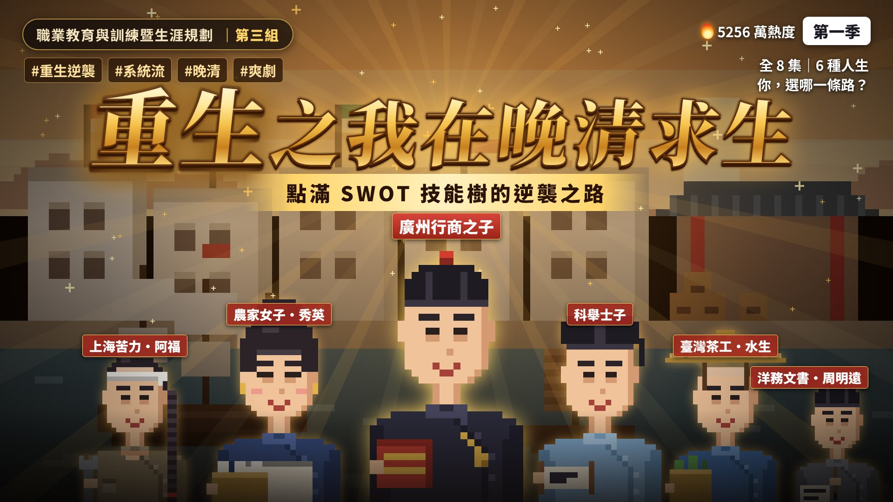
國中社會 × 生涯規劃｜教學遊戲
叮！你重生到了晚清。
你只是個普通的國中生，一覺醒來卻回到 19 世紀的中國。抽一種身分、闖過 8 集歷史變局，每一次選擇，都會改寫你這一世的命運。
ROLES
這一世，你會是誰？
身分是系統隨機抽的，就像我們沒辦法選自己生在哪個時代。起跑點不一樣，能走的路也不一樣。
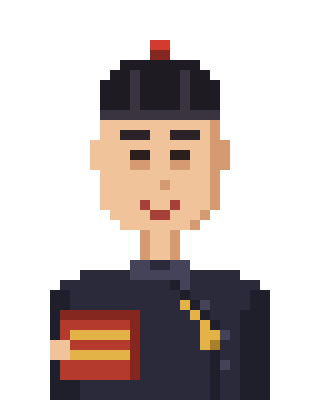
廣州行商之子
1826 年生於廣州十三行商人家庭，開局家財萬貫。
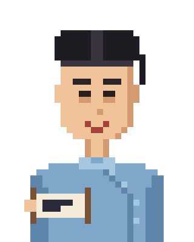
科舉士子
1830 年生於蘇州讀書人家，全家都盼你考取功名。
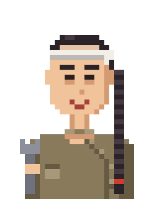
上海苦力「阿福」
1835 年生於江北佃農家庭，唯一的本錢是年輕的身體。
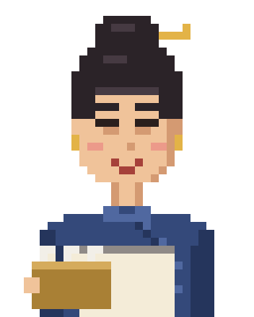
江南農家女子「秀英」
1838 年生於松江棉農家，女性能走的路很少，那就自己開一條。
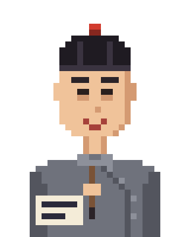
洋務文書「周明遠」
1838 年生於湖南寒門書生家，寫得一手好字，卻沒錢考試。
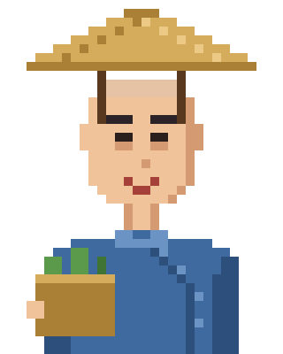
臺灣茶工「水生」
1850 年生於艋舺移民家庭，大批洋船正在靠近淡水河口。
HOW TO PLAY
怎麼玩
全劇 8 集，每集三選一，沒有標準答案。畫面上有虛線的詞，點一下就會跳出白話解釋。
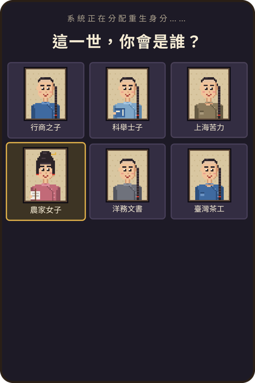
1重生抽身分
系統隨機分配，看清楚你的起始數值和開局 SWOT。
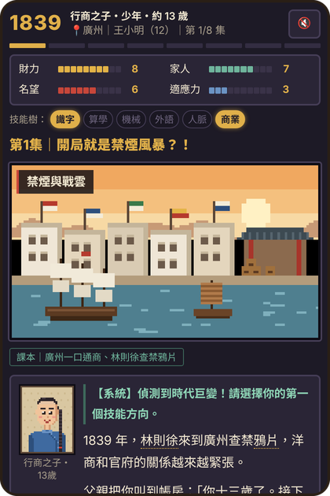
2每集三選一
每一集都是課本裡的真實事件，選項順序每次都不同。
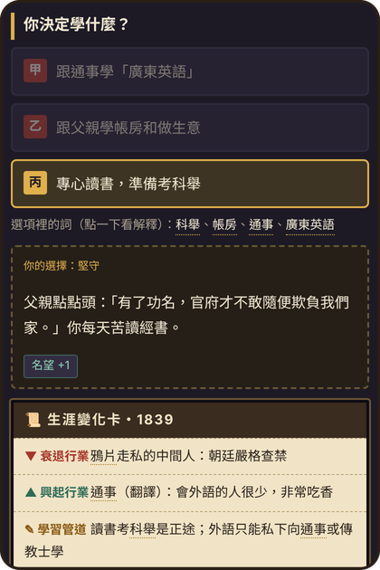
3看見代價
財力、家人、名望、適應力常常一升一降；技能沒點亮，有些路就走不了。
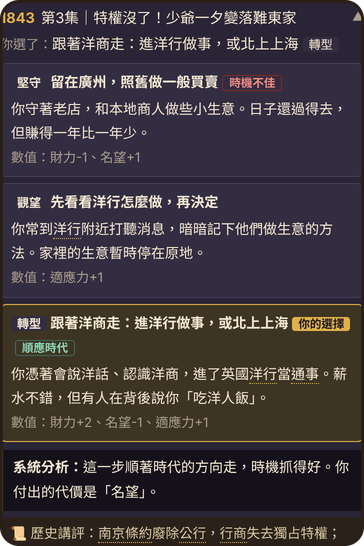
4回顧沒選的路
結局整理出這一世的 SWOT，還能展開看「如果當初選別的」。
FOR TEACHERS
給老師的說明
本遊戲是教案「發展活動」的一部分，玩完後接到第二節的「我的 AI 時代 SWOT」學習單。
課程對應
- 國中社會 第三篇 第 5 章〈西力衝擊下的東亞世界〉
- 涯 J9社會變遷與工作／教育環境
- 涯 J11分析影響生涯決定的因素
- 涯 J12發展及評估生涯決定的策略
課堂怎麼用
- 建議留 20 分鐘；一輪約 10 分鐘，玩得快的學生可以再抽一個身分。
- 一人一台平板或電腦，備耳機（遊戲內也可以關音樂）。
- 玩完按「存成圖片」，帶去小組分享與學習單。
- 全遊戲有 102 個名詞解釋，學生遇到難詞可以自己查。
開始前，跟學生說四件事
- 你重生了：隨機抽一種晚清身分。
- 全劇 8 集，每集三選一，沒有標準答案。
- 留意四項數值；有些選項要先點亮技能。
- 玩完存圖，等一下小組要分享。
六種結局
順勢而起、穩健過渡、堅守而安穩、堅守而落寞、浪潮所迫、轉型受挫。結局和自己的起點比，所以開局窮的角色不會注定輸。
提醒學生
事件取材自課本與史實，重生情節與主角是虛構的；數值是幫助思考的工具，不是替人生打分。遊戲進度只存在這台裝置的瀏覽器裡，換裝置要重新玩。